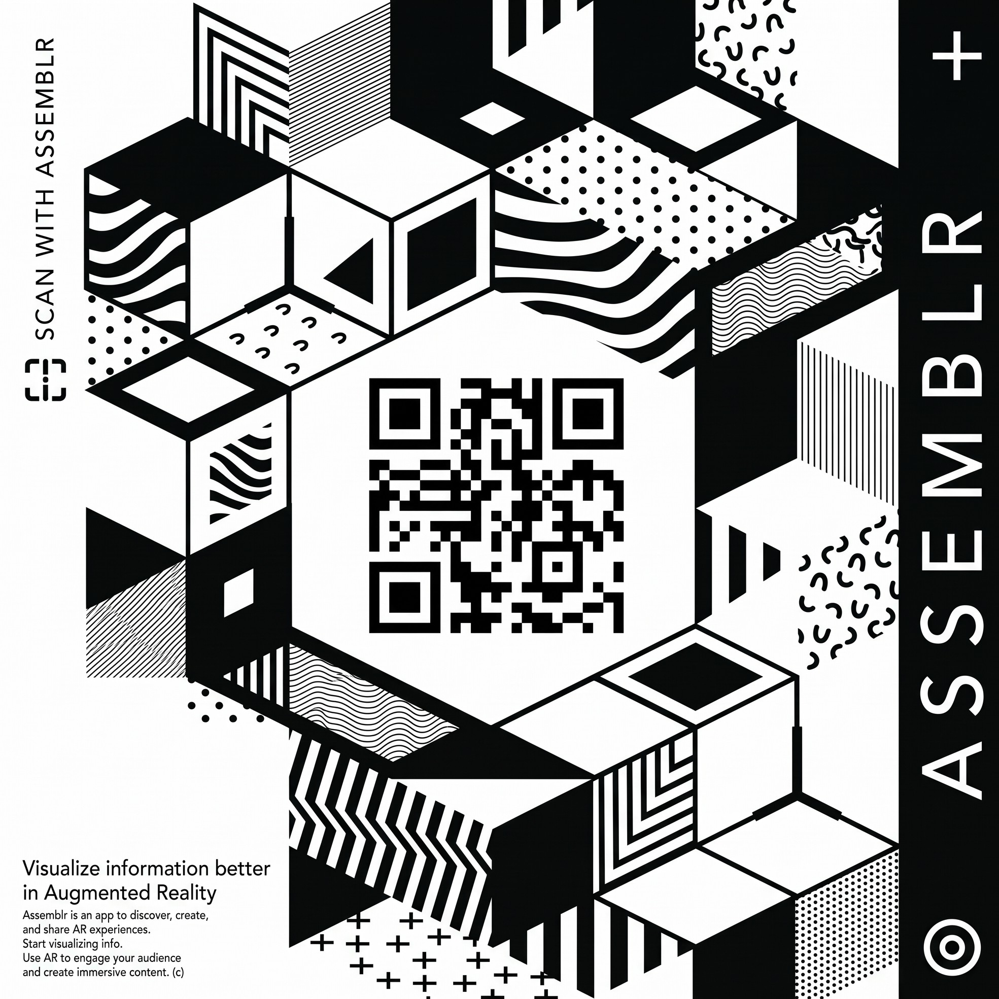
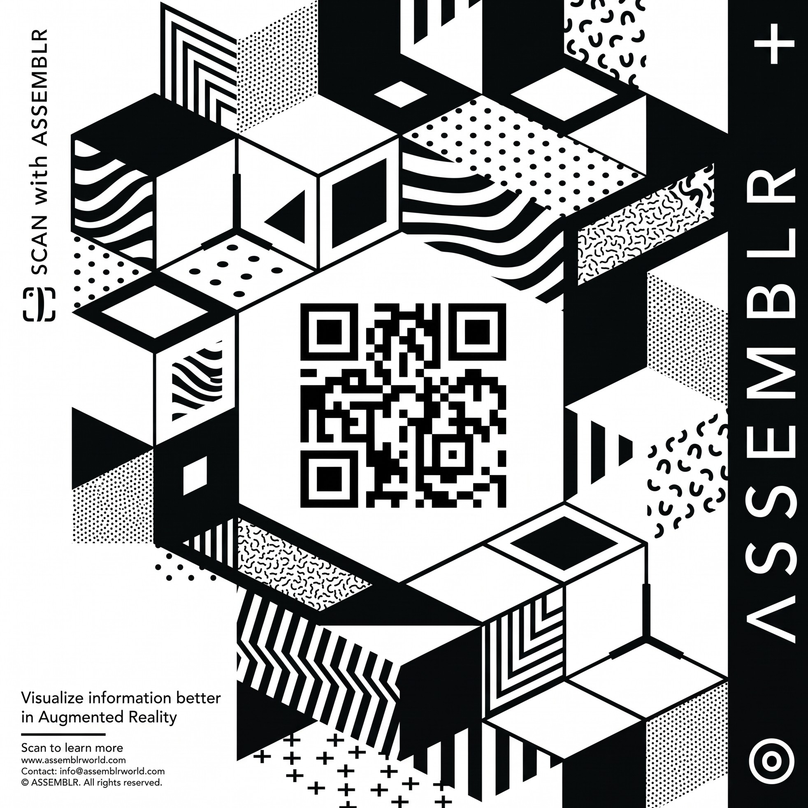
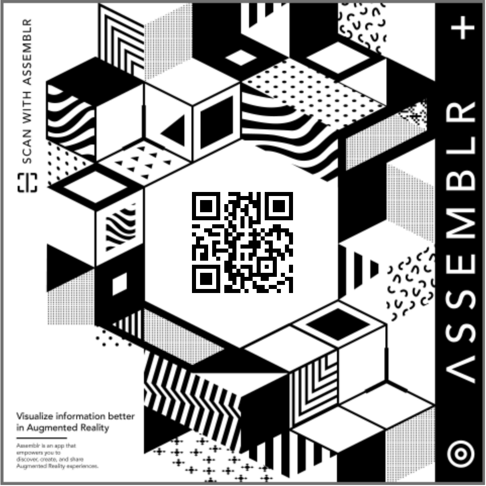

Tiga Pilar Utama Media Numera PISA
Dirancang secara komprehensif untuk memfasilitasi pendidik dan peserta didik dalam penguatan literasi numerasi berstandar asesmen internasional.
Konsep PISA & Literasi Numerasi
Kajian mendalam mengenai kerangka asesmen OECD PISA, domain Space and Shape, 4 konteks masalah dunia nyata, serta tiga proses matematis utama (Formulate, Employ, Interpret).
- Siklus pemodelan nalar HOTS
- Deskriptor kemahiran Level 1 - 6
Media Interaktif WebAR 3D
Penampil model 3 dimensi langsung di peramban web didukung
<model-viewer>. Menyajikan rotasi 360 , inspeksi rusuk tersembunyi,
jaring-jaring, dan proyeksi kamera AR.
- 6 Model bangun ruang utama
- Proyeksi kamera di atas meja belajar
Repositori Bahan Ajar PDF
Repositori dokumen kurikulum terstruktur mencakup Modul Pembelajaran Geometri, Lembar Latihan Soal Stimulus Kontekstual, serta Pedoman Penilaian dan Rubrik Penskoran Analitis.
- Prototipe in-app reader interaktif
- Format unduhan PDF siap cetak
Panduan Alur Belajar Peserta Didik
Empat langkah berjenjang dari pemahaman teoretis hingga pemecahan masalah nyata
Pelajari Teori & Kerangka PISA
Masuk ke tab Materi. Pahami esensi domain Space & Shape, 4 konteks masalah, serta 3 proses pemodelan matematis.
Eksplorasi AR & Bangun Ruang 3D
Gunakan simulator 3D untuk mengamati bangun ruang secara komprehensif, meneliti relasi unsur geometri, menganalisis struktur jaring-jaring, serta mengaktifkan WebAR pada perangkat seluler.
Telaah Modul Pembelajaran PDF
Buka menu Bahan Ajar untuk menelaah modul pembelajaran secara langsung melalui penampil PDF terintegrasi atau mengunduhnya untuk dipelajari secara mandiri.
Evaluasi Instrumen Soal & Rubrik
Kerjakan instrumen asesmen kontekstual (Level 1-6), kemudian evaluasi alur penalaran Anda menggunakan Pedoman Kunci Jawaban dan Rubrik Penilaian PISA.
Materi Pembelajaran PISA, Numerasi & WebAR
Kajian komprehensif asesmen internasional PISA, siklus pemodelan literasi numerasi kontekstual, serta simulasi visualisasi spasial tiga dimensi berbasis Augmented Reality.
Hakikat & Penyelenggaraan PISA
PISA (Programme for International Student Assessment) adalah studi evaluasi komparatif internasional tertua dan paling berpengaruh yang diselenggarakan oleh OECD (Organisation for Economic Co-operation and Development).
- Penyelenggara: OECD (Organisation for Economic Co-operation and Development)
- Sasaran: Peserta didik usia 15 tahun menjelang akhir pendidikan wajib dasar
- Siklus Pengujian: Diselenggarakan berkala setiap 3 tahun sekali sejak tahun 2000
- Fokus Literasi: Membaca (Reading), Matematika (Mathematics), dan Sains (Science)
1. Filosofi Asesmen Abad Ke-21
Berbeda dengan ujian konvensional yang mengukur pengingatan materi kurikulum secara hafalan, PISA dirancang untuk mengevaluasi kapasitas peserta didik dalam menerapkan pengetahuan dan keterampilan pada konteks kehidupan nyata.
PISA bukan tes kecerdasan IQ dan bukan pula tes hafalan rumus mekanis. PISA adalah cermin kesiapan literasi masa depan peserta didik.
Urgensi & Refleksi PISA bagi Indonesia
Partisipasi Indonesia dalam PISA sejak tahun 2000 memberikan cermin independen yang sangat berharga untuk mengevaluasi efektivitas sistem pendidikan nasional dan mengarahkan reformasi kurikulum menuju penalaran kritis.
- Cermin Mutu Nasional: Menyediakan data empiris komparatif dengan lebih dari 80 negara di dunia
- Pendorong Kurikulum Merdeka & Asesmen Nasional (ANBK): Menggantikan UN yang bersifat hafalan menjadi Asesmen Kompetensi Minimum (AKM)
- Transformasi Pedagogis: Mendorong guru beralih dari instruksi prosedural rutin ke pembelajaran berbasis masalah (PBL) dan penemuan (Inquiry)
1. Mengapa Indonesia Konsisten Berpartisipasi?
Keikutsertaan berkelanjutan Indonesia sejak tahun 2000 membuktikan komitmen bangsa untuk memiliki tolok ukur obyektif berstandar global. Hasil PISA menjadi rujukan strategis dalam penyusunan kebijakan nasional.
Pembelajaran matematika berorientasi pada pengembangan daya nalar kritis, kemampuan abstraksi spasial, serta perumusan solusi terhadap fenomena kontekstual terstruktur.
Matriks 4 Konteks Masalah PISA dalam Geometri Ruang
Pemetaan stimulus masalah nyata yang sering diujikan pada asesmen internasional
Aktivitas Personal & Domestik
Penataan perabot ruangan (balok), perancangan konstruksi tenda (prisma segitiga), serta estimasi kapasitas wadah penyimpanan.
Industri, Rekayasa & Arsitektur
Perhitungan struktur atap limas penahan beban angin, efisiensi bahan karton pada industri kemasan, dan efisiensi volume muatan kargo.
Komunitas & Fasilitas Publik
Pembangunan tandon penampungan air silinder komunal, konstruksi monumen piramida publik, serta perancangan tata ruang kota berpola simetri geometris.
Sains, Geofisika & Teknologi Ruang
Analisis struktur kubah observatorium astronomi, identifikasi bentuk kristal mineral poligonik, serta kalkulasi volume pelampung apung oseanografi.
Hakikat Literasi Numerasi vs Matematika Murni
Literasi numerasi adalah kemampuan, kepercayaan diri, dan kecenderungan seseorang untuk menggunakan pemikiran matematis dalam memenuhi tuntutan kehidupan sehari-hari di masyarakat.
Tiga (3) Proses Matematis Utama dalam PISA
Alur penalaran peserta didik dalam menyelesaikan permasalahan kontekstual berstandar asesmen internasional
Merumuskan (Formulating)
Dari Dunia Nyata ke Dunia MatematikaKemampuan mengidentifikasi peluang matematis dalam masalah kontekstual, lalu menerjemahkannya ke dalam bahasa, simbol, diagram, dan model matematika yang relevan.
Menerapkan (Employing)
Bekerja di Dalam Ranah MatematikaKemampuan menerapkan konsep, fakta, prosedur komputasi, rumus, dan penalaran matematis untuk memecahkan model yang telah dirumuskan.
Menafsirkan & Mengevaluasi (Interpreting & Evaluating)
Dari Solusi Matematika Kembali ke RealitasKemampuan merefleksikan kembali hasil kalkulasi matematika ke dalam konteks masalah awal, serta menilai apakah solusi tersebut masuk akal dan relevan dengan situasi nyata.
Rumah Kajang Lako
Arsitektur Tradisional Jambi
Unsur Bangun Ruang
- Bentuk Badan: Badan rumah menyerupai bangun ruang Balok yang simetris.
- Struktur Atap: Atap melengkung menyerupai perahu merupakan modifikasi dari Prisma Segitiga.
Akses Kamera AR via Assemblr Edu
Pindai (scan) marker di bawah ini menggunakan kamera aplikasi Assemblr Edu di ponselmu, atau klik tombol untuk membukanya langsung di peramban.

Rumah Kajang Lako
Bangunan adat Jambi.

Candi Muaro Jambi
Situs bata merah presisi.
Candi Apit
Arsitektur candi Hindu.
Masjid Cheng Ho
Tantangan game Level 2.

Luas Permukaan Balok
Simulasi jaring-jaring balok.
Repositori Bahan Ajar Digital
Seluruh dokumen pembelajaran disusun secara terstandarisasi. Pengguna dapat menelaah dokumen secara langsung melalui penampil interaktif atau mengunduhnya ke perangkat untuk pembelajaran mandiri.
Buku / Modul Pembelajaran Geometri Ruang PISA
Buku modul ajar terstruktur yang memadukan capaian pembelajaran kurikulum nasional dengan kerangka domain Space & Shape PISA. Memuat petunjuk belajar, eksplorasi AR, dan penanaman konsep bangun ruang.
Lembar Soal Latihan Geometri PISA (Kompilasi Stimulus)
Kumpulan instrumen soal stimulus kontekstual berstandar PISA level kemahiran 1 sampai 6. Dilengkapi stimulus grafis arsitektur, perhitungan material, dan efisiensi volume.
Kunci Jawaban & Rubrik Pembahasan Soal PISA
Panduan evaluasi lengkap mencakup langkah matematis sistematis (Formulate, Employ, Interpret), pedoman penskoran analitis (Full Credit, Partial Credit, No Credit), dan pemetaan level kompetensi.
Framework Asesmen PISA 2022 (OECD)
Dokumen resmi kerangka kerja asesmen PISA 2022. Membahas landasan konseptual literasi matematika, proses pemodelan, serta rincian domain Space and Shape secara mendalam.
Kumpulan Soal Rilis PISA 2012 (Bahasa Inggris)
Kompilasi butir soal rilis resmi dari OECD. Menyajikan berbagai konteks masalah nyata seperti personal, pekerjaan, sosial, dan ilmiah beserta pedoman penskoran (scoring rubric) secara detail.
Item Tes Matematika PISA 2022 (Computer-Based)
Dokumen item tes PISA 2022 yang dirilis resmi. Memperlihatkan format asesmen berbasis komputer (CBA) modern yang menggunakan pemodelan, interaksi spreadsheet, dan simulasi.
Petunjuk Pembelajaran Mandiri:
Peserta didik disarankan menyelesaikan instrumen pada lembar soal latihan secara mandiri sebelum menelaah pedoman penilaian. Fokus evaluasi terletak pada ketepatan alur pemodelan matematis (Formulating, Employing, Interpreting), bukan sekadar nilai komputasi akhir.
Petualangan Numerasi Jambi
Asah kemampuan literasi matematika berstandar PISA sambil menjelajahi keindahan budaya dan pariwisata Jambi melalui game interaktif ini!
Misi Eksplorasi 3 Destinasi
Kendalikan karakter utama melewati rintangan hewan liar menggunakan Sihir Api & Es. Eksplorasi Candi Muaro Jambi, Masjid Cheng Ho, hingga Danau Sipin!
-
Peti Harta & Buku Catatan: Jawab kuis matematika dasar untuk mengumpulkan koin, kunci, dan "Petunjuk" rahasia yang otomatis tersimpan di catatanmu.
-
Gerbang Akhir (Boss PISA): Rangkai 3 petunjuk dari Buku Catatan untuk memecahkan soal kompleks literasi matematika PISA di ujung setiap level.
-
Sistem Upgrade & Rating: Kumpulkan koin untuk membeli peningkatan sihir di Peta Wisata (Sistem Hub) dan raih 3 Bintang!
Tutor AI & Repositori Prompt
Pilih instruksi (prompt) yang tersedia atau ketik pertanyaan Anda sendiri. Gunakan AI sebagai pendamping bernalar untuk membedah langkah penyelesaian soal PISA.
Klik "Jalankan di Tutor" untuk langsung mengirim instruksi ke Asisten AI di sebelah kanan.
Tutor Konsep Jaring-Jaring
Bertindaklah sebagai tutor matematika. Jelaskan konsep jaring-jaring bangun ruang sisi datar (prisma) menggunakan bahasa yang mudah dipahami. Berikan langkah demi langkah (scaffolding) tanpa langsung memberi jawaban akhir untuk soal berikut: [MASUKKAN SOAL].
Pemeriksa Alur Pemodelan PISA
Ini adalah langkah pengerjaan soal PISA saya: [MASUKKAN JAWABAN ANDA]. Tolong periksa alur logika matematis saya berdasarkan proses 'Formulate, Employ, Interpret'. Di mana letak kesalahan saya? Beri petunjuk kecil untuk memperbaikinya.
Pembuat Latihan Soal HOTS
Buatkan 2 soal latihan matematika berorientasi HOTS setara PISA Level 4 pada domain Space and Shape. Gunakan konteks pekerjaan (Occupational) mengenai efisiensi ruang kargo. Lengkapi dengan rubrik penskoran analitis.
Numera AI Tutor
Siap membantu AndaTim Pengembang & Tim Ahli
Kolaborasi inovatif mahasiswa dan dosen pakar dari Universitas Jambi dalam mengembangkan media pembelajaran Numera PISA.
Feri Tiona Pasaribu, M.Pd., C.I.T.
FKIP, Universitas Jambi
Pembimbing mahasiswa Universitas Jambi dalam ajang internasional "World Creative Challenge: Math You Can Touch 2025" (IDM/UNESCO). Co-inventor HKI Handout AR Assemblr Edu & Modul Bangun Ruang, serta penggerak platform digital MathVerse.
Dr. Tria Gustiningsi, M.Pd.
FKIP, Universitas Jambi
Pakar evaluasi PISA yang aktif sebagai dosen pendamping IDM 2025. Berpengalaman dalam penerapan Augmented Reality (AR) matematika dan tercatat sebagai inventor HKI Video Soal Matematika Konteks Diskon & Belanja.
Dr. Syamsir Sainuddin, S.Pd., M.Pd.
FKIP, Universitas Jambi
Narasumber kecerdasan buatan dalam pendidikan matematika. Co-inventor aplikasi Mathlitpro App (Mobile Adaptive Testing berbasis IRT) dan penulis modul riset metakognitif berbantuan AI/ChatGPT.
Yelli Ramalisa, S.Pd., M.Pd.
FKIP, Universitas Jambi
Aktif mengonsep e-modul interaktif berbasis budaya lokal Jambi. Penulis riset pengembangan soal matematika tipe PISA berbasis konteks Jambi, serta tercatat sebagai Co-inventor HKI aplikasi Mathlitpro App.
Ranisa Junita, S.Pd., M.Pd.
FKIP, Universitas Jambi
Penulis korespondensi riset E-Modul berbasis Understanding by Design (UbD) untuk meningkatkan kemampuan spasial siswa. Co-inventor HKI Modul Bangun Ruang Sisi Datar Berbasis Project Based Learning Konteks Jambi.
Isnania, S.Pd., M.Pd.
FKIP, Universitas Jambi
Spesialis pengembangan media pembelajaran digital interaktif. Menulis riset Mosharafa mengenai STEM-PBL E-Module serta ahli merancang E-Modul berbasis RME menggunakan 3D Pageflip Professional.
Ansharudin Sahid
FKIP, Universitas Jambi
Mahasiswa pengembang utama platform Numera PISA. Mengintegrasikan pemrograman web interaktif, teknologi WebAR, dan perancangan game edukasi (HTML5/Canvas) untuk menciptakan pengalaman belajar literasi numerasi yang imersif dan lekat dengan budaya lokal Jambi.
Marker AR
Pindai (scan) QR ini menggunakan fitur kamera pada aplikasi Assemblr Edu di HP Anda.